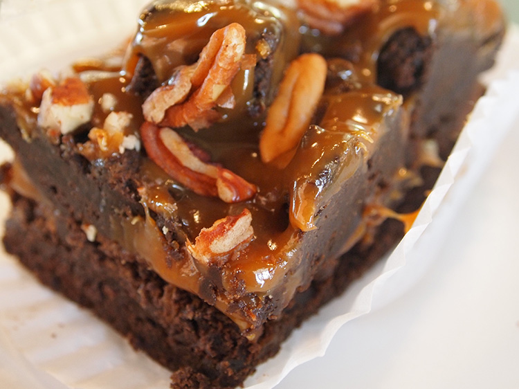
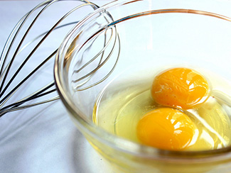

How to make peanut butter rocky road brownies; It took me 56 years to find out the secret of how to make the best brownies! Brownies are always a hit and plus their easier to make and healthier than cake pops, cronuts and cupcakes. Your brownies will be rich, moist and chewy and you and your family will love them!
Ingredients
Step 1
Heat oven to 350°F (180°C) or 325°F (160°C) for dark or nonstick pans. Grease or spray bottom of 9x13-inch (23x33 cm) pan.

Step 2
In medium bowl, combine brownie mix, oil, water, and eggs just until everything is well blended; spread in pan.